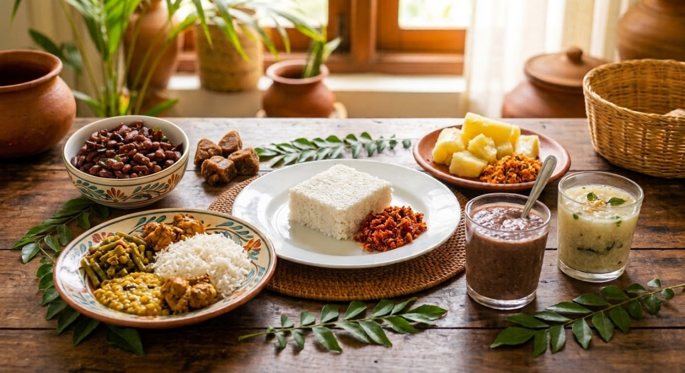

ශ්රී ලාංකික සාම්ප්රදායික ඖෂධීය ආහාර
කොළකැඳ සමඟ ඔබේ දවස සෞඛ්යවත් ලෙස ආරම්භ කරන්න
ඔබගේ දවසට සෞඛ්යවත් ආරම්භයක්!
Herbal Food Corner වෙතින් ශ්රී ලංකාවේ සාම්ප්රදායික ඖෂධීය කැඳවල රසය අත්විඳින්න. ඔබේ උදෑසන ආහාරයට නැවුම්ව සකස් කළ හුරුපුරුදු දේශීය රසයන්.
රත්මලාන, ගාලු පාර · ශ්රී ලංකාව

සාම්ප්රදායිකශ්රී ලාංකික රසයන්
ඖෂධීයදේශීය ආහාර සංස්කෘතිය
දේශීයරත්මලානේ පිහිටා ඇත
මාර්ගගතව ඇණවුම් කරන්න
Herbal Food Corner වෙතින් ඇණවුම් කරන්න
ඔබ කැමති බෙදාහැරීමේ සේවාව තෝරන්න.
HERBAL FOOD CORNER වෙතින්
අපගේ ගැලරිය
අපගේ ඖෂධීය පැළෑටි සහ ආහාර ගමනේ ඡායාරූප බලන්න.
මතකයන් සහ අත්දැකීම්
විශේෂ මතකයන්
Herbal Food Corner හි අපගේ අමතක නොවන අවස්ථා.
ශ්රී ලාංකික උරුමයේ රසය
සාම්ප්රදායික ඖෂධීය උදෑසන ආහාරය නැවතත් අත්විඳින්න
කොළකැඳ ශ්රී ලංකාවේ ආහාර උරුමයේ කොටසකි. Herbal Food Corner හිදී අපි දේශීය කැඳවල සාම්ප්රදායික රසය සහ උදෑසන ආහාර සංස්කෘතිය අගය කරමු.
කොළකැඳ ගැන දැනගන්නපැමිණෙන්න / අමතන්න
Herbal Food Corner සොයාගන්න
අංක 248/1, ගාලු පාර, රත්මලාන, ශ්රී ලංකාව
අද දවසේ ආහාර, විවෘත වේලාවන් සහ ඇණවුම් ගැන විමසීමට අප අමතන්න.
Google Maps හි අපව සොයාගන්න